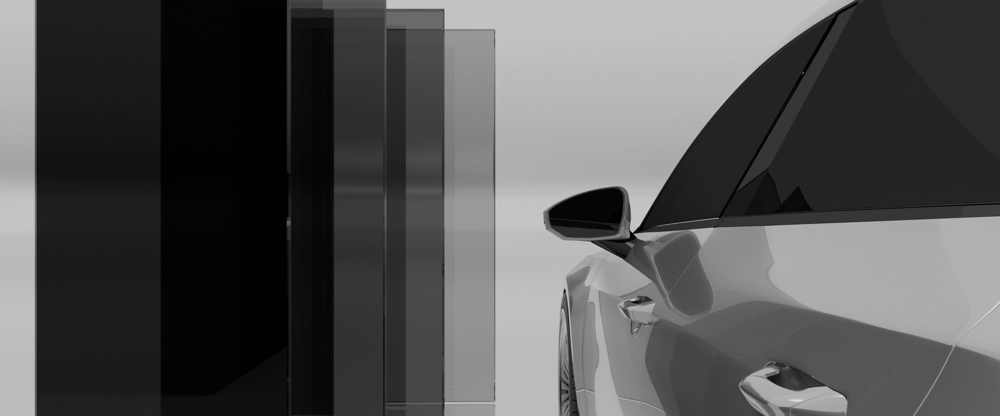

Our Story
About Us
Nestled in Stoney Creek, Ontario, we are a premier automotive car clinic fuelled by an unwavering passion for the automotive industry. With a strong legacy spanning over 6 years, our expertise and commitment shine through in every service we provide. From laser-cut window tinting to a precision detail, our dedicated team ensures your vehicle receives the utmost care, backed by years of experience and a genuine love for all things automotive. At our car clinic, your automotive needs are our priority, and your satisfaction is our ultimate goal. Trust us to keep you on the road with confidence!
At Innovative Car Clinic your vehicle isn't just a mode of transportation, it's a canvas for our artistry.
